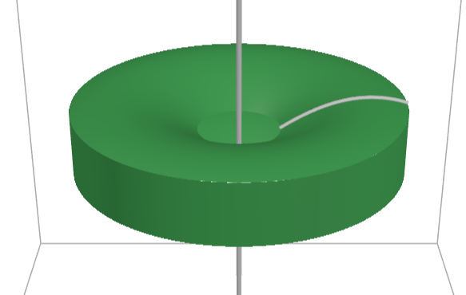
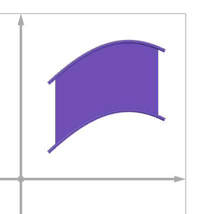
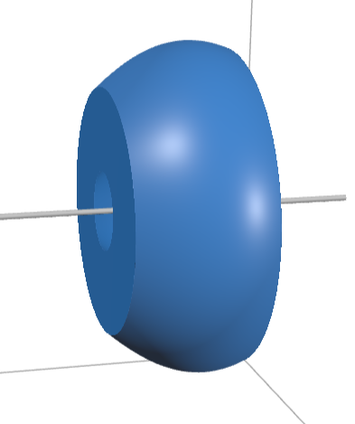
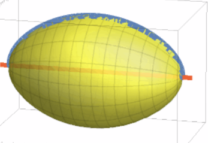
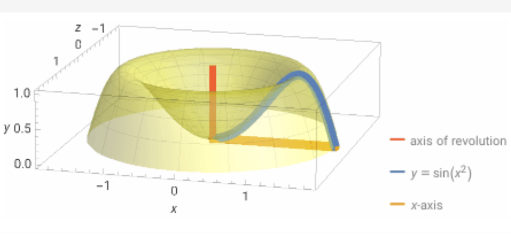

A type 1 region is a region bounded above by $y=f(x)$ and below by $y=g(x)$ for $a \le x \le b$.
Break the interval $[a,b]$ into subintervals of width
The region is bounded by $y=\sin(x)$ and $y=\cos(x)$ from $x=0$ to $x=\pi/4$.
The region is bounded by $y=e^x+1$ and $y=x+1$ on the interval $[0,2]$.
When a type 1 region is rotated about the x-axis, the cross-sections are washers.
For rotation about the y-axis, use a vertical slice to form a cylindrical shell.



The region is under $y=\sqrt{\sin(x)}$ from $x=0$ to $x=\pi$.

The region is under $y=\sin(x^2)$ from $x=0$ to $x=\sqrt{\pi}$.
